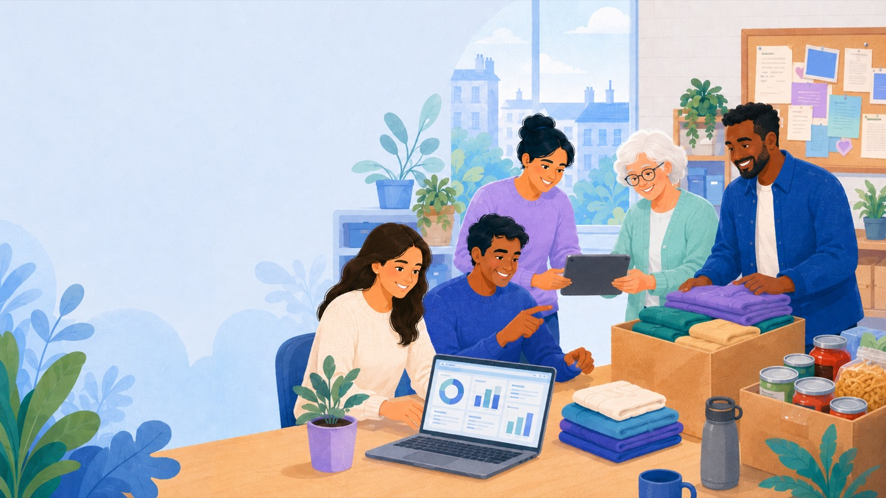
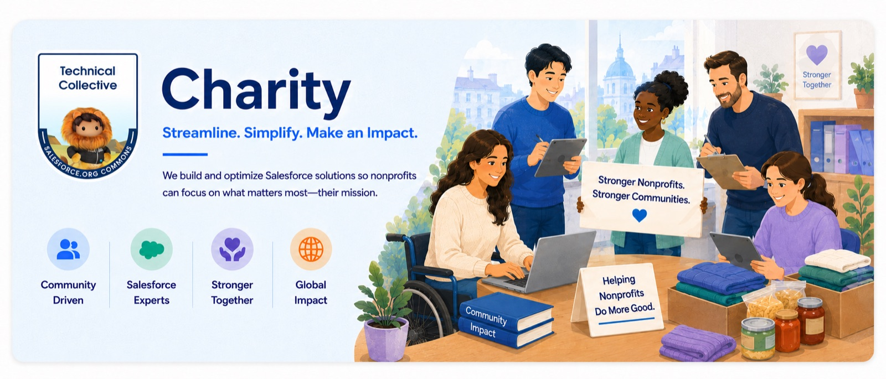

Salesforce support for your mission
You are a nonprofit organisation in need of Salesforce support. Look no further than The Technical Collective.
We are a team of passionate volunteers, here to support charities in their journey towards leveraging the power of Salesforce. We understand that time and budget constraints can make it challenging for nonprofits to hire additional resources to support their teams to satisfy all their organisational requirements.
That's where we come in. We connect enthusiastic junior Salesforce professionals who are seeking work experience with charities in need of support. Our goal is to match the right professional with the right organisation, ensuring a mutually beneficial partnership. By volunteering their time and expertise, our professionals help charities optimise their Salesforce systems, provide strategic guidance, and empower them to achieve their mission with the support of technical experts. We believe in the power of collaboration and making a positive impact — let us be your partner in harnessing the full potential of Salesforce for your charity.
Eligibility
We are seeking nonprofits or social organisations who meet the following requirements:
- ✓ Registered charities with donated or discounted Salesforce licenses through the Power of Us Program
- ✓ Have at least one license available for the duration of the project
- ✓ Have recently or newly implemented Salesforce, or are ready to enhance an existing implementation
What we ask of you
- ✓ Willingness to collaborate with the volunteer and provide feedback
- ✓ Create a safe environment for learning
- ✓ One production license and 2 sandbox licenses for the project, with full System Administrator access
- ✓ Clear guidance on priorities for the technical changes needed
- ✓ Clear, measurable objectives, achievable in the agreed time frame
- ✓ Review & approve solutions suggested by our experts
- ✓ Responsibility for NDAs, data privacy (e.g. GDPR), backups and sector policies
- ✓ A closing survey and case study on the project's impact
- ✓ And the biggest one — your time to help make this a success
What you can expect from us
- ✓ A dedicated Salesforce technical team for a time-framed project with clear deliverables
- ✓ A team of experts from the Salesforce Community to support your volunteer
- ✓ Greater impact through the CRM — measuring charity impact for funding and board reporting
- ✓ New talent and connections to grow your network and the community

Apply for Salesforce support
Tell us about your organisation and your Salesforce setup, and we'll be in touch.
Find out more about the promises exchanged between the groups of The Technical Collective project.